Reproduction & bug-fix study
The paper
“Data Cleansing for Models Trained with SGD”
Accepted at NeurIPS 2019 (33rd Conference on Neural Information Processing Systems)
The main aim of this directory is twofold: the Method chapter (§1–§5) explains the paper — what SGD-influence is, why it is useful, and how it relates to earlier work. The Experiments chapter (§6–§9) documents the faithful reproduction, four examined differences between paper and code, the modified experiments, and their performance comparison; the Conclusion (§10) sums up, and Appendix A records the experimental settings.
The counterfactual question is: how would the validation loss change if training example zᵢ had been absent? Classical influence functions answer it for converged empirical-risk minimizers; SGD-influence answers it for the model you actually have — the product of a specific SGD trajectory.
Because training saved the parameters at every minibatch step, the effect of removing one example can be estimated linearly along that exact trajectory. The estimator starts from the validation-loss gradient at the final model and walks the saved steps in reverse chronological order, propagating a query vector u through each step and accumulating, for every training example, how much its gradient at that step moved the validation loss.
Two scores fall out of the accumulated matrix:
sgd_last — influence accumulated over the last epoch only.sgd_all — influence accumulated over all epochs.Cleansing is then simple: rank examples by score, remove the top-K most harmful, retrain, and check whether validation/test error actually drops — compared against removing K random examples and against not removing anything.
Definition 2 defines the counterfactual SGD trajectory that would have resulted if training instance \(j\) had not contributed its gradient:
\[ \theta^{[t+1]}_{-j} \leftarrow \theta^{[t]}_{-j} - \tfrac{\eta_t}{|S_t|}\textstyle\sum_{i\in S_t\setminus\{j\}} g(z_i;\theta^{[t]}_{-j}) \]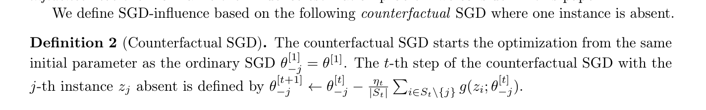
The counterfactual run starts from the same initialization, removes one instance's gradient whenever it appears, and keeps the normalization at \(1/|S_t|\). Definition 3 calls the resulting parameter difference \(\theta^{[t]}_{-j}-\theta^{[t]}\) the SGD-influence of instance \(j\).
Problem 4 asks for \( L_{-j}(u)=\langle u,\ \theta^{[T]}_{-j}-\theta^{[T]}\rangle \) for a chosen query vector \(u\). Computing it directly for every \(j\) would require \(N\) counterfactual retrainings, so the paper derives an estimator that obtains all instances' values in one pass over the saved trajectory.
Equation (2) approximates the missing instance's effect by propagating its gradient through the later SGD steps:
\[ \theta^{[T]}_{-j}-\theta^{[T]} \approx \tfrac{\eta_{\pi(j)}}{|S_{\pi(j)}|}\, Z_{T-1}\cdots Z_{\pi(j)+1}\, g(z_j;\theta^{[\pi(j)]}) =: \Delta\theta_{-j},\qquad Z_t=I-\eta_t H^{[t]} \]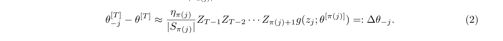
This follows from a first-order Taylor expansion at each stored point along the actual training trajectory.
The one-epoch estimator assumes each instance appears once. For \(K\)-epoch SGD, let \(\pi_1(j),\dots,\pi_K(j)\) be the steps where instance \(z_j\) is used. Each usage contributes one propagated term, and the effects add:
\[ \Delta\theta_{-j} \;=\; \sum_{k=1}^{K} \Bigl(\textstyle\prod_{s=1}^{\,T-\pi_k(j)-1} Z_{T-s}\Bigr)\, \tfrac{\eta_{\pi_k(j)}}{|S_{\pi_k(j)}|}\, g\bigl(z_j;\theta^{[\pi_k(j)]}\bigr) \]With \(u^{[t]} := Z_{t+1}\cdots Z_{T-1}\,u\), the linear influence decomposes per epoch: \( \langle u, \Delta\theta_{-j}\rangle = \sum_{k=1}^{K} \bigl\langle u^{[\pi_k(j)]},\ \tfrac{\eta_{\pi_k(j)}}{|S_{\pi_k(j)}|} g(z_j;\theta^{[\pi_k(j)]})\bigr\rangle \).
This per-epoch decomposition is exactly why the implementations in this repository accumulate an examples × epochs score matrix: each epoch's contribution is one column. The two rankings used for cleansing are read off that matrix — sgd_last is the last epoch's contribution alone, while sgd_all is the sum over all epochs.
The training phase stores \((S_t,\eta_t,\theta^{[t]})\) at every SGD step.
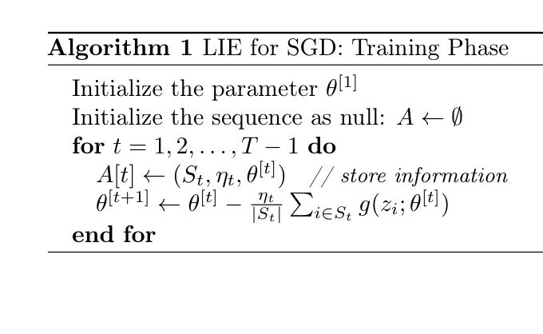
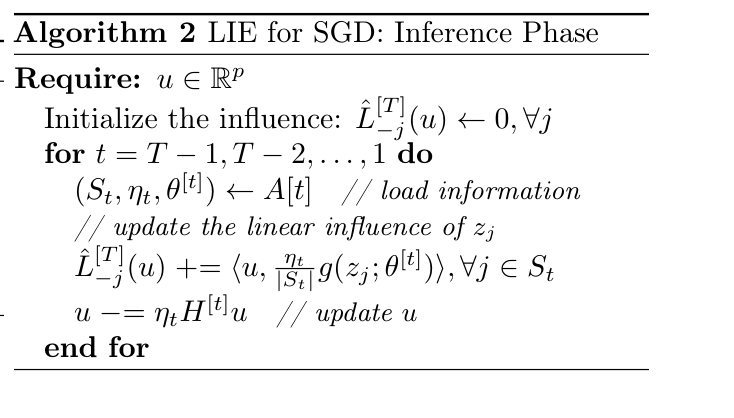
The inference phase walks those stored steps backward, accumulating \( \hat L_{-j}(u) \mathrel{{+}{=}} \langle u, \tfrac{\eta_t}{|S_t|}g(z_i;\theta^{[t]})\rangle \) and propagating \( u \mathrel{{-}{=}} \eta_t H^{[t]} u \).
The Hessian-vector product \(H^{[t]}u\) is computed by differentiating \(\langle u,\nabla\ell\rangle\); the Hessian itself is never formed.
The paper also bounds the estimation error: a uniform bound for strongly convex losses (Theorem 5), and a growth bound for non-convex losses under \(\eta=O(\gamma/\sqrt{T})\) (Theorem 6). The estimator is therefore not merely heuristic.
The training phase stores \((S_t,\eta_t,\theta^{[t]})\) for every step, so disk usage grows linearly with the number of SGD steps — in this repository, these are the per-step snapshot files of §6. The inference phase revisits each stored step once; with maximum minibatch size \(M\) and per-gradient cost \(\delta\), its time is \(O(TM\delta)\), and the Hessian — which would require \(O(p^2)\) memory — is never materialized.
Rank training examples by their estimated influence on validation loss, remove the most harmful, and retrain. This requires no hand-written outlier rules and still works when practitioners cannot say in advance what an “abnormal” example looks like.
Classical influence functions assume a convex loss and an optimal model. SGD-influence is defined for the model you actually trained — with any loss and at any stopping point — because it analyzes the SGD steps themselves.
The query vector \(u\) is free. Set it to the gradient of validation loss to estimate how removal changes validation loss, as this repository does for cleansing. Set it to the gradient of one prediction to estimate how removing an example would move that single prediction, enabling per-prediction debugging and explanation.
The training phase must store per-step snapshots, making this repository's episode directories disk-heavy. The inference phase then costs one backward pass per stored step.
The Experiments chapter first reproduces the original implementation faithfully (§6), then pins down where it diverges from the paper (§7), reruns the experiments with those points addressed (§8), and compares the two implementations (§9).
The experiment is implemented twice, on purpose. The two directories are parallel codebases: the faithful reproduction is introduced here, while the modified version appears in §8 — their differences are the study.
reproduction/ contains and how its pipeline runs.The original code, cleaned up and reorganized. Five deliberate differences, none of which should affect results:
numpy and pytorch too, not only random.momentum=0.run.sh <seed> <gpu> <mnist|cifar10>code/train.py — train, snapshotting parameters before every minibatch.
→ epochNN_model.dat, epochNN_optimizer.dat, score.dat, config.jsoncode/infl.py — batched per-example influence via exgrads, reverse traversal.
→ infl_sgd_at_epoch20.dat (matrix: examples × epochs)code/eval.py — retrain after removing top-K by sgd_last / sgd_all / random, K = 1…10000.
→ eval_epoch_19_to_20.datvisualize/sumup.py (run separately) — average test error over trials in MIRROR/.
→ error-vs-K plotsThe paper
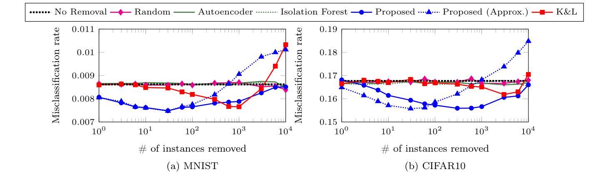
This reproduction
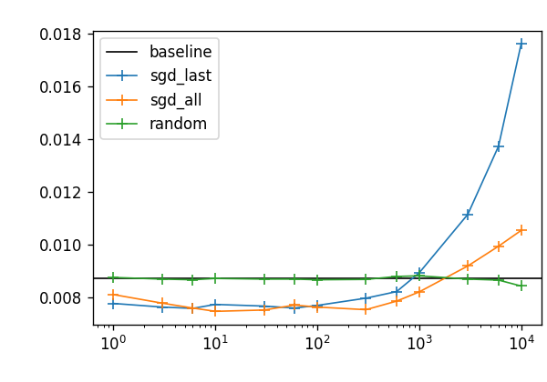
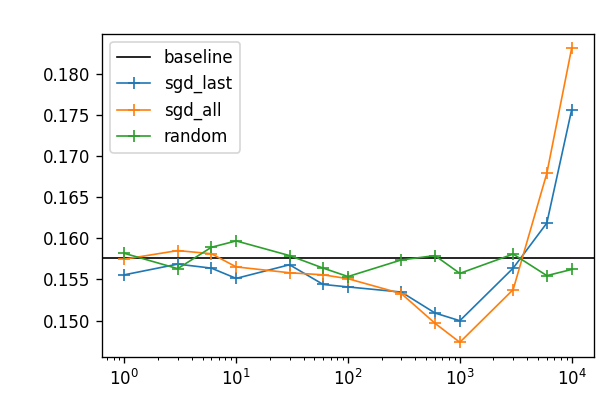
For moderate \(K\), influence-ranked removal dips below the no-removal baseline in both the paper and this reproduction, at the same error scale (MNIST ≈0.008, CIFAR-10 ≈0.16). At \(K=10^4\) removal hurts in both; the reproduction's sgd_last rises further (≈0.018) than the paper's approximate curve (≈0.010).
The reproduction matches the paper qualitatively and in scale.
Key
sgd_all | Proposed |
sgd_last | Proposed (Approx.) |
random | Random |
| baseline | No Removal |
Protocol = the paper's counterfactual last epoch (p.8), i.e. final-epoch replay. The paper averages 30 splits; this reproduction fewer, so curves are noisier. Autoencoder / Isolation Forest / K&L are not reproduced.
Real difference
The paper
Paper — Definition 2 (p.3) removes the gradient term of the absent instance while keeping the original normalization:
\[ \theta^{[t+1]}_{-j} \leftarrow \theta^{[t]}_{-j} - \tfrac{\eta_t}{|S_t|}\textstyle\sum_{i\in S_t\setminus\{j\}} g(z_i;\theta^{[t]}_{-j}) \]With BatchNorm the per-example loss \(\ell(z;\theta)\) is not defined in isolation, and the paper does not specify which batch statistics the counterfactual should use — this point is genuinely undefined by the paper.
Original implementation
for i, s in zip(idx, seeds): if i in skip_idx: continue t += 1 trainset.seed = s d = trainset[idx_train[i]] Xtr.append(d[0]) ytr.append(d[1])Original — removed examples are skipped before the batch is formed (if i in skip_idx: continue).
The forward pass — and therefore the BatchNorm statistics normalizing every remaining example — is computed over \(S_t\setminus\{\mathrm{removed}\}\). Removing example \(j\) changes the gradients of all other examples through the statistics, a second-order effect the influence estimator (Eq. 2) never models.
This implementation
for i,x,y in datasets.train: wrong_mask = torch.tensor([iii.item() in removal_index for iii in i]) good_mask = ~wrong_mask good_mask = good_mask.cuda(config.gpu) logit = model(x) loss = F.cross_entropy(logit, y, reduction='none') loss = (loss*good_mask).mean()This implementation — the full original batch is forwarded, and removed examples are masked out of the unreduced loss.
Removed examples contribute no gradient, but BatchNorm keeps the original \(S_t\) statistics — the counterfactual then matches what the estimator linearizes: removal of the gradient contribution only.
The difference
For MNIST (no BatchNorm) the two choices are provably identical; both reduce exactly to Definition 2. For CIFAR-10 they differ, and the choice here keeps the evaluation consistent with the quantity the scores estimate.
The same experiment re-examining four suspected issues in the original implementation (each checked against the paper in §7), plus one augmentation correction. Run orchestration is parallelized over 8 GPUs and seeds 0–7.
One further correction outside the four: random-crop padding is filled with the normalized value of a raw zero pixel (−mean/std, per channel on CIFAR-10) instead of a literal zero in normalized space (extra-1/code/augmentation_zoo.py). This concerns data augmentation, not the estimator, and has no counterpart in the paper.
run.py (jobs distributed over GPUs 0–7)code/1-train.py — both datasets × seeds 0–7 × 20 epochs.
→ params/NN.pt, trails.pkl, config.jsoncode/2-score.py — influence scores per training episode.
→ scores/20.pklcode/3-evaluate.py — counterfactual retraining from start_epoch ∈ {0, 19}.
→ evaluations/00_to_20.pkl, 19_to_20.pklvisualize/sumup.py — plots per dataset and start epoch.
→ VIEW/data=<dataset>-start_epoch=<NN>.pngThese plots compare the faithful reproduction (§6) against the bug-fixed variant (§8).
All plots show test error rate vs. number of removed training examples K (log scale), averaged over trials: removal by sgd_last, sgd_all, and random, against the no-removal baseline (horizontal line). Curves below the baseline mean the cleansing helped.
The reproduction's evaluation replays only the final epoch, matching the bug-fixed run at start_epoch=19; these form the like-for-like pair for each dataset. The bug-fixed variant additionally evaluates a full replay at start_epoch=0, which has no reproduction counterpart.
start_epoch=0 replays all 20 epochs without the removed examples; start_epoch=19 replays only the final epoch.Takeaway
The bug fixes do not overturn the paper's qualitative claim: influence-ranked cleansing beats random removal for small-to-moderate \(K\) in both variants. Their visible effect is concentrated in the CIFAR-10 details, where BatchNorm handling matters.
start_epoch=19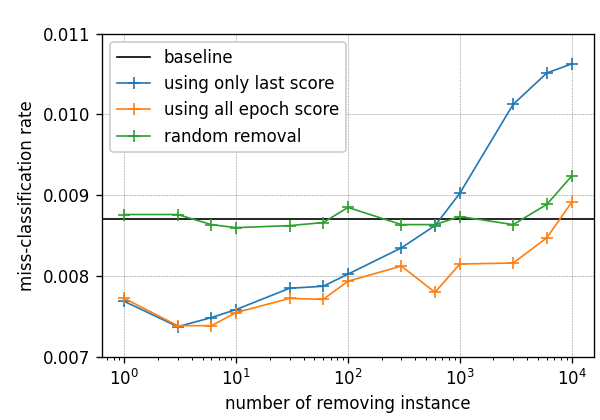
start_epoch=0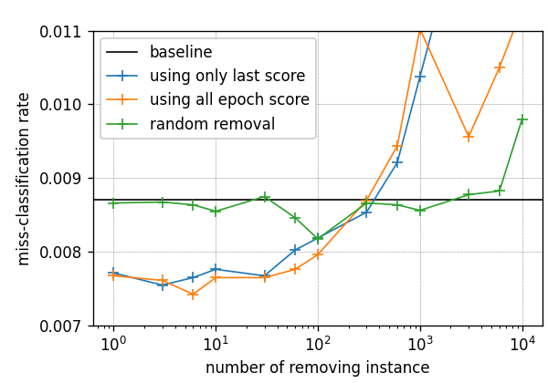
Figure 9.1 — MNIST, reproduction vs. bug-fixed. Takeaway: the two implementations agree qualitatively — influence-ranked removal stays at or below the no-removal baseline through moderate \(K\) while random removal hovers at the baseline, and removing on the order of \(10^4\) examples hurts regardless of ranking, in every panel. Key: columns — which implementation (reproduction §6 vs. bug-fixed §8); rows — replay span after removal (final epoch only, start_epoch=19, vs. all 20 epochs, start_epoch=0); the dashed cell (reproduction × full replay) was not run. Legend names differ per column: sgd_last/sgd_all on the left are “using only last / all epoch score” on the right — the same rankings.
The MNIST model contains no BatchNorm, so two of the four §7 findings (§7.2 scoring statistics, §7.4 batch composition) cannot change anything here; the substantive difference between the columns is the query-update fix (§7.1). Yet the cleansing curves barely move: both implementations dip below the baseline through moderate \(K\) and blow up at \(10^4\). This suggests the mis-scaled Hessian correction in the original mainly distorts score magnitudes, while the head of the ranking — the examples whose removal actually helps — stays largely intact on a dataset this easy.
The bottom-right panel adds what the reproduction cannot: with all 20 epochs replayed (start_epoch=0), the below-baseline dip survives, so the benefit of influence-ranked cleansing is not an artifact of replaying only the final epoch. The penalty at \(K=10^4\) is also steeper there — removing a fifth of the training set costs more when the whole trajectory feels the loss.
start_epoch=19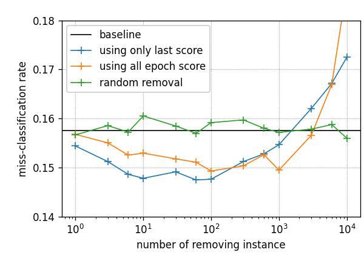
start_epoch=0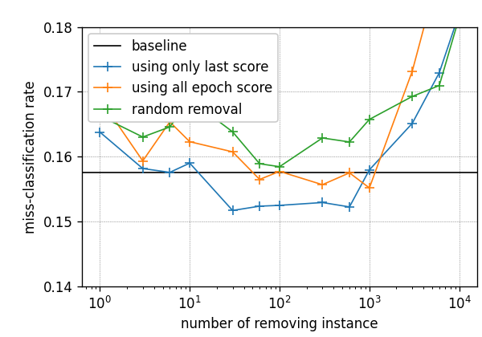
Figure 9.2 — CIFAR-10, reproduction vs. bug-fixed. Takeaway: CIFAR-10 is noisier, but both implementations tell the same story — modest gains around \(K \approx 10^2\)–\(10^3\) and sharp degradation at \(10^4\), with curves more sensitive than on MNIST, consistent with the BatchNorm-related points (§7.2, §7.4). Key: columns — which implementation (reproduction §6 vs. bug-fixed §8); rows — replay span after removal (final epoch only, start_epoch=19, vs. all 20 epochs, start_epoch=0); the dashed cell (reproduction × full replay) was not run. Legend names differ per column: sgd_last/sgd_all on the left are “using only last / all epoch score” on the right — the same rankings.
CIFAR-10 is where the fixes should matter: the model has BatchNorm, so the scoring statistics (§7.2) and the batch composition under removal (§7.4) genuinely change the computation. The matched-protocol column bears this out — the bug-fixed run holds below the baseline over a wider range of \(K\) (roughly \(1\)–\(10^3\)) than the reproduction, whose dip is confined to \(K \approx 10^2\)–\(10^3\). Cleaner influence estimates appear to buy a broader useful head of the ranking.
The full-replay row tempers the picture: with all 20 epochs replayed, the curves cross the baseline earlier (around \(10^3\)) and the random curve wanders more, i.e. the counterfactual is noisier when drift can compound over the whole trajectory. The qualitative claim still holds in every panel, but on CIFAR-10 the margin is thin — consistent with the caveat in §10 that conclusions on this dataset are sensitive to how BatchNorm is handled.
Of the four suspected issues in the original implementation, two are verified divergences from the paper: the query-vector update is under-scaled by \(1/|S_t|\) (§7.1), and per-example gradients are taken under batch-size-1 BatchNorm statistics while overwriting stored statistics (§7.2). One claim does not survive scrutiny: the retraining-step scale matches Definition 2 exactly in both implementations (§7.3). One point is genuinely undefined by the paper — which batch statistics the counterfactual should use under removal — and this repository chooses estimator-consistent masking (§7.4).
Yes, qualitatively. In both the faithful reproduction and the bug-fixed variant, removing the top-\(K\) influence-ranked examples beats random removal and can push test error below the no-removal baseline for small-to-moderate \(K\) on MNIST and CIFAR-10 (see the comparison in §9). At very large \(K\), around \(10^4\), removal hurts regardless of ranking. The influence ranking carries real signal about which examples harm the model.
This is a private reproduction: the divergences were identified by code inspection and have not been confirmed with the original authors; CIFAR-10 conclusions are sensitive to how BatchNorm is handled, which the paper does not specify; and the two implementations differ in more than the four points examined, including seeding and augmentation timing, as documented in §6.
Where to go next: the pipelines in §6 and §8 rerun everything, and every §7 claim links the exact paper statement and code lines so it can be re-verified independently.
Both variants run the same three stages on MNIST and CIFAR-10, with a small CNN, 20 epochs, SGD (lr=0.05, momentum=0, batch 64), and 10,000 training examples held out as the validation set.
| Topic | Detail |
|---|---|
| Hardware | CUDA is required. Data and models are moved with .cuda(gpu) throughout; there is no CPU fallback. cuDNN runs in deterministic mode. |
| Dependencies | torch, torchvision, numpy, joblib, matplotlib, exgrads (per-example gradients); extra-1/run.py additionally needs query_queue_and_parallel. |
| Data | MNIST / CIFAR-10 are downloaded and cached automatically under data/ (tensor caches in data/.cache/). |
| Config merge | Scoring/eval scripts merge the saved episode config with CLI args as config | vars(args) — CLI values, including untouched defaults, override the saved config. |
| Snapshot cost | Parameters are saved before every minibatch step; episode directories grow large — plan disk accordingly. |